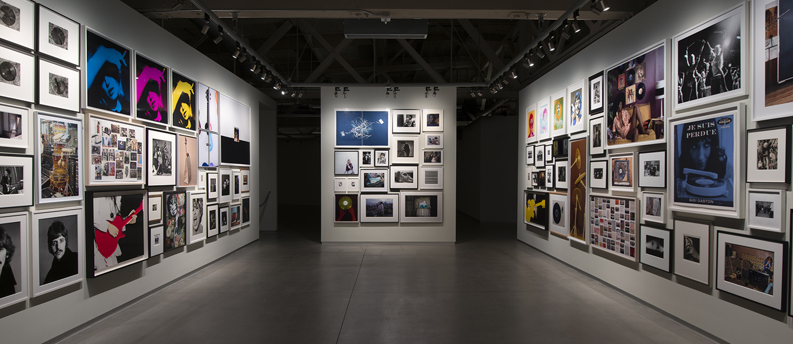
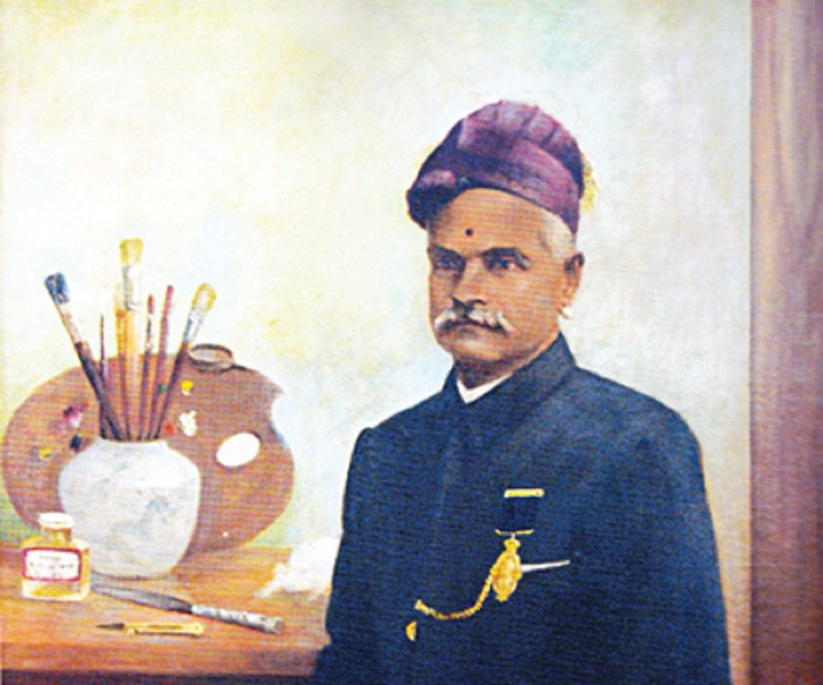
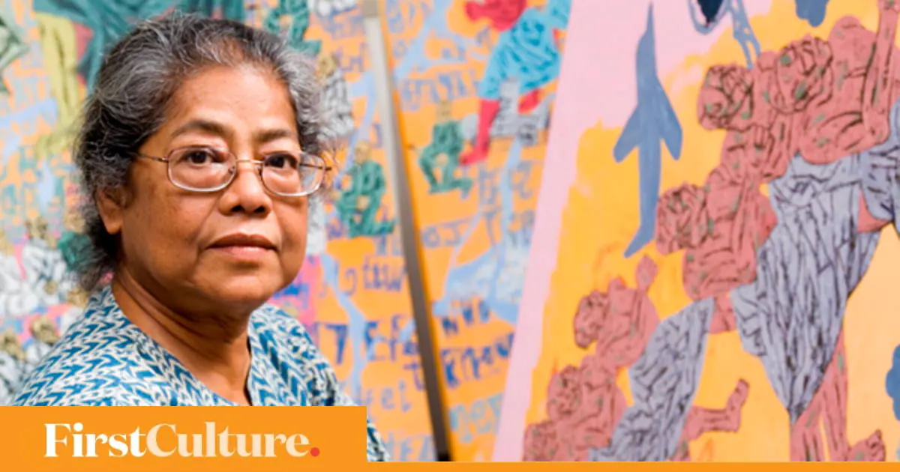

ART GALLERY BLOG
An art gallery is a room or a building in which visual art is displayed. ... Most art galleries open to the public are commercial enterprises for the sale of artwork, others may be part of art cooperatives or non-profit organizations.Galleries have multiple roles, both visible and invisible: to incubate and support their artists, often by going above and beyond the normal work of putting on shows, promoting their artists, and selling the works; and to providing services such as financial management or book publishing, in order to help their artists.

Are you looking for an Online gallery art system ? We are here to help you. You can contact us. Online Art gallery management system is an application that allows buyers to purchase paintings, scriptures, models online. The purchase is just a click away, you don’t have to go to some old museums and buy from selected stuff.
This application will provide you with a wide range of choices. The registration in this application is free, unlike other sites. It provides various categories too, in buyers’ accordance. It provides free home delivery to buyers.
Art gallery is the place where the arts or art crafts of the artists can be displayed for the visitors view. People also buy the arts that artist’s exhibit. Sometimes it will be difficult to maintain the details of the artists and their painting details through the pen paper method. The art gallery management is the application that allows the art gallery owners to maintain the details of the artists and the details of their paintings with great ease. Also keep the details of different kinds of paintings. This will be one of the useful applications for the owners of the art gallery which will reduce most of their work.
The artists can have their pencil sketches, paintings, oil paintings and many other forms of paintings that can be displayed in art galleries. Some of the art galleries will be having the paintings based on the different modes of paintings such as oil paintings,abstract etc. But at some point of time if the artist’s details are required, then you can get it easily if this application is used by the owner of the art gallery. Details of any artist and details of their paintings can be obtained with ease in just one mouse click. Some of the features that it can include in this online art gallery system is to buy the arts based on artists or based on different styles.
The main menu will contain six parts which are as follow: >Customer Login >>Register >>Art in sale >>New art >>Payment Mode >>About Artist >>Contact us $Now, we can see that nearly everything is very much possible to perform with a single click so this system will help you to computerize the system so that users and clients can access the system online. SOME OF THE FAMOUS ARTIST IN OUR GALLERY

Picasso demonstrated extraordinary artistic talent in his early years, painting in a naturalistic manner through his childhood and adolescence. During the first decade of the 20th century, his style changed as he experimented with different theories, techniques, and ideas. After 1906, the Fauvist work of the slightly older artist Henri Matisse motivated Picasso to explore more radical styles, beginning a fruitful rivalry between the two artists, who subsequently were often paired by critics as the leaders of modern art.

David Hockney has been featured in over 400 solo exhibitions and over 500 group exhibitions On 21 June 2006, Hockney's painting The Splash sold for £2.6 million. It was offered for auction again on 11 February 2020, with an estimate of £20–30 millionand sold, to an unknown buyer, for £23.1 million. His A Bigger Grand Canyon, a series of 60 canvases that combined to produce one enormous picture, was bought by the National Gallery of Australia for $4.6 million.
Arpita Singh's first exhibition was held at Kunika Chemould Gallery, organised by Roshan Alkazi, New Delhi in 1972 Arpita Singh's early paintings were mainly water colors on paper. She would paint usually in black and white ink
The main menu will contain six parts which are as follow: >Customer Login >>Register >>Art in sale >>New art >>Payment Mode >>About Artist >>Contact us $Now, we can see that nearly everything is very much possible to perform with a single click so this system will help you to computerize the system so that users and clients can access the system online. SOME OF THE FAMOUS ARTIST IN OUR GALLERY
PABLO PICASSO
Pablo Ruiz Picasso (25 October 1881 – 8 April 1973) was a Spanish painter, sculptor, printmaker, ceramicist and theatre designer who spent most of his adult life in France. Regarded as one of the most influential artists of the 20th century, he is known for co-founding the Cubist movement, the invention of constructed sculpture,[8][9] the co-invention of collage, and for the wide variety of styles that he helped develop and explorePicasso demonstrated extraordinary artistic talent in his early years, painting in a naturalistic manner through his childhood and adolescence. During the first decade of the 20th century, his style changed as he experimented with different theories, techniques, and ideas. After 1906, the Fauvist work of the slightly older artist Henri Matisse motivated Picasso to explore more radical styles, beginning a fruitful rivalry between the two artists, who subsequently were often paired by critics as the leaders of modern art.

RAJA RAVI VERMA
Raja Ravi Varma(29 April 1848 – 2 October 1906) was an Indian painter and artist. He is considered among the greatest painters in the history of Indian art. His works are one of the best examples of the fusion of European academic art with a purely Indian sensibility and iconography. Additionally, he was notable for making affordable lithographs of his paintings available to the public, which greatly enhanced his reach and influence as a painter and public figure. His lithographs increased the involvement of common people with fine arts and defined artistic tastes among common people. Furthermore, his religious depictions of Hindu deities and works from Indian epic poetry and Puranas have received profound acclaim. He was part of the royal family of erstwhile Parappanad, Malappuram district. Raja Ravi Varma was closely related to the royal family of Travancore of present-day Kerala state in India. Later in his life, two of his granddaughters were adopted into that royal family, and their descendants comprise the totality of the present royal family of Travancore, including the latest three Maharajas (Balarama Varma III, Marthanda Varma III and Rama Varma VII).
DAVID HOCKNEY
David Hockney, OM, CH, RA (born 9 July 1937) is an English painter, draftsman, printmaker, stage designer, and photographer. As an important contributor to the pop art movement of the 1960s, he is considered one of the most influential British artists of the 20th century. Hockney has experimented with painting, drawing, printmaking, watercolours, photography, and many other media including a fax machine, paper pulp, computer applications and iPad drawing programs. The subject matter of interest ranges from still life's to landscapes, portraits of friends, his dogs, and stage designs for the Royal Court Theatre, Glyndebourne, and the Metropolitan Opera in New York City.David Hockney has been featured in over 400 solo exhibitions and over 500 group exhibitions On 21 June 2006, Hockney's painting The Splash sold for £2.6 million. It was offered for auction again on 11 February 2020, with an estimate of £20–30 millionand sold, to an unknown buyer, for £23.1 million. His A Bigger Grand Canyon, a series of 60 canvases that combined to produce one enormous picture, was bought by the National Gallery of Australia for $4.6 million.

ARPITA SINGH
Arpita Singh (born Arpita Dutta, 1937) is an Indian artist. She was born in 1937 at Baranagar in Kolkata, West Bengal, India.[1] Known to be a figurative artist and a modernist, her canvases have both a story line and a carnival of images arranged in a curiously subversive manner. Her artistic approach can be described as an expedition without destination. Her work reflects her background.[2] She brings her inner vision of emotions to the art inspired by her own background and what she sees around the society that mainly affects women. Her works also include traditional Indian art forms and aesthetics, like miniaturist painting and different forms of folk art, employing them in her work regularlyArpita Singh's first exhibition was held at Kunika Chemould Gallery, organised by Roshan Alkazi, New Delhi in 1972 Arpita Singh's early paintings were mainly water colors on paper. She would paint usually in black and white ink